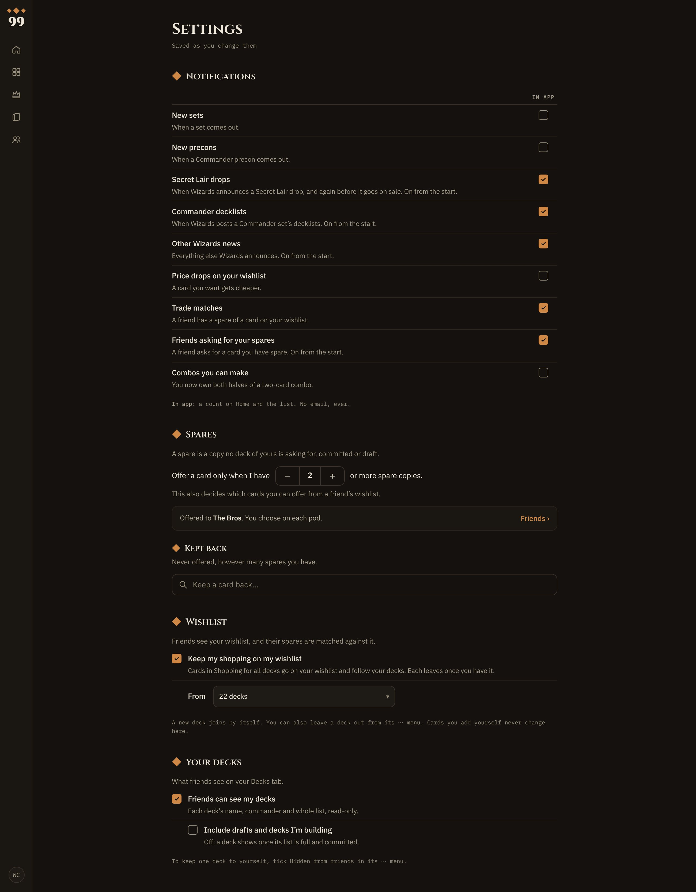
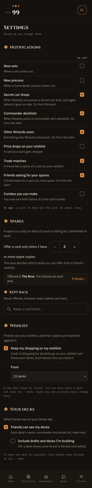
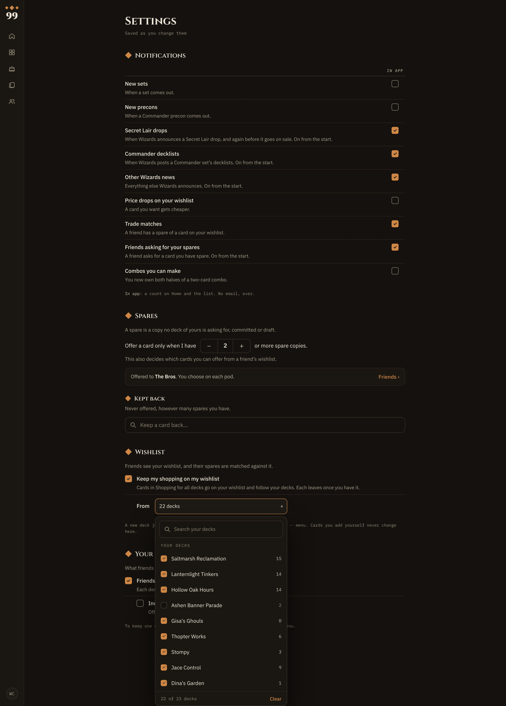
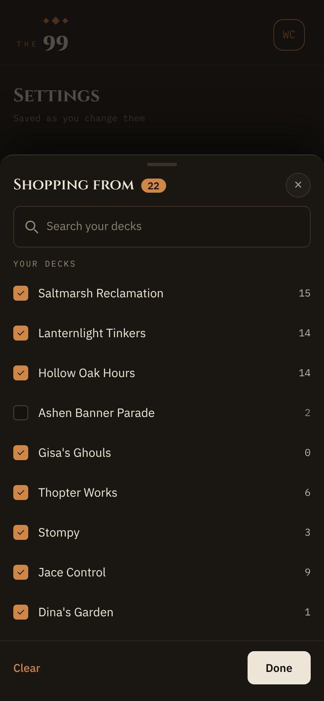
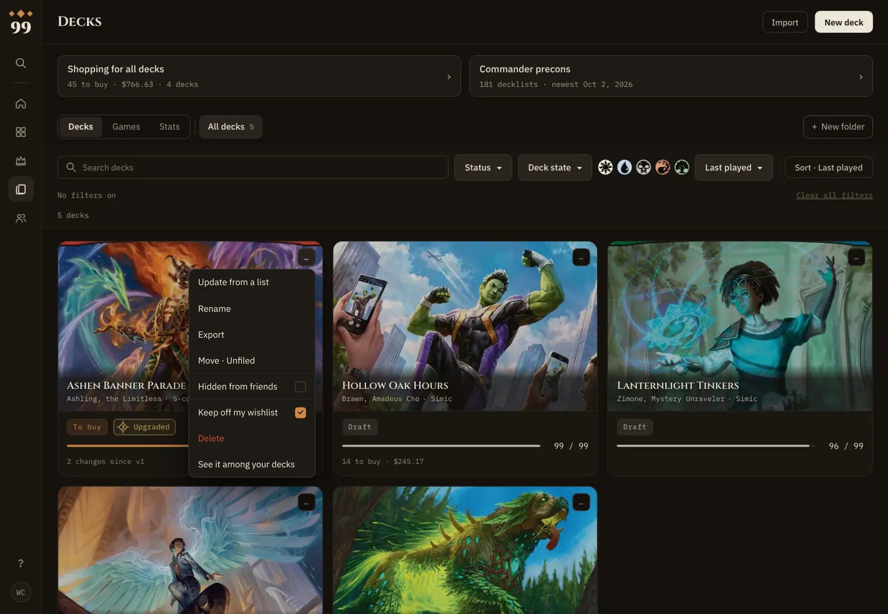
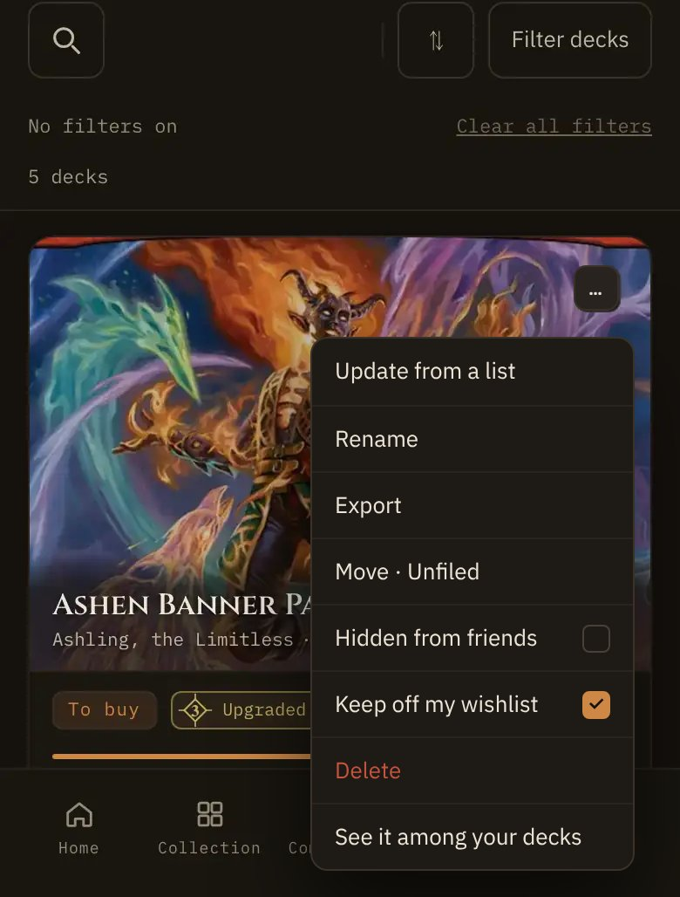

S1c · Settings › Wishlist, switch on
"Keep my shopping on my wishlist" names both places. Under it, "From 22 decks" is the shipped field trigger of the searchable deck picker, so the section is the same height at 5 decks or 50. Every deck starts in, and a new deck joins by itself. Switch off, the From row dims and can't be opened.

Phone
The From field goes full width under its label.

S2 · The deck picker open
The shipped FilterPanel, unchanged: search, a tick per deck, and the count Shopping lists for it on the right. Untick Ashen Banner Parade and its cards leave your wishlist. The foot reads "22 of 23 decks" with Clear.

Phone
The same panel as the shipped bottom sheet, "Shopping from 22", Clear and Done.

M1 · The deck's ⋯ menu, Decks list
The same choice from the deck itself: "Keep off my wishlist" under Hidden from friends, as the same checkbox row, shown only while the switch is on. Ticking it here unticks the deck in the picker, and the other way round. The deck page header's ⋯ menu gets the same row.

Phone
Scrolled to the first tile.
